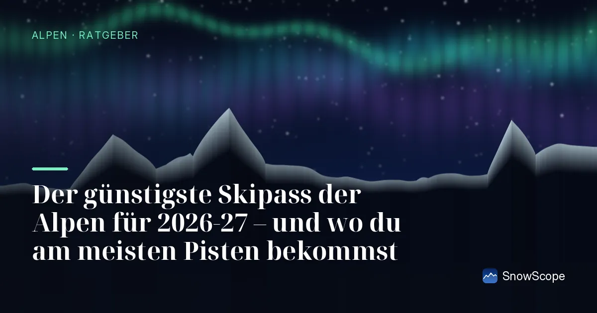

Der günstigste Skipass der Alpen für 2026-27 – und wo du am meisten Pisten bekommst
Der niedrigste Tagespreis in den Alpen ist nicht immer das beste Angebot. Les Karellis verlangt 36 EUR für einen Erwachsenen-Tagespass, den günstigsten, den wir gefunden haben, aber für 58 EUR öffnet Alpe d'Huez 163 km Pisten, fast viermal so viel Skigebiet. So schneiden neun preisgünstige Skigebiete im Vergleich ab, wenn man den Berg mit einbezieht, den man dafür bekommt.
Die Live-Schneeprognose für Les Karellis in der SnowScope-AppSchneehöhen, Pulverschnee-Alarme und 3D-Karte, gratis.
Neun Tagespässe von 36 bis 60 EUR
Am unteren Ende der Preisliste stehen zwei kleine französische Skigebiete: Les Karellis mit 36 EUR für den Winter 2026-27 und Puy-Saint-Vincent mit 44 EUR. Danach folgt Slowenien mit Krvavec zum Normaltarif von 47 EUR und Vogel mit 49 EUR.
Dann kommen die größeren Skigebiete. Valloire-Valmeinier verlangt 54,9 EUR für das Galibier-Thabor-Gebiet, Galtür 55,5 EUR in der Nebensaison, Alpe d'Huez ab 58 EUR, Vars-Risoul 58 EUR für die Forêt Blanche, und Pila über Aosta hält die ganze Saison einen Festpreis von 60 EUR.
Pistenkilometer: der versteckte Rabatt
Wir haben die Pisten gezählt, die wir für jedes Skigebiet kartiert haben. Alpe d'Huez führt mit 163 km, dann folgen Valloire-Valmeinier und Vars-Risoul mit jeweils 131 km. Für einen starken Skifahrer, der viel Gelände abfahren will, sind diese drei die wahren Schnäppchen: ein paar Euro mehr als die kleinen Skigebiete, dreimal so viel Terrain.
Pila hat 56 km, Les Karellis 45 km und Puy-Saint-Vincent 42 km, gut für einen entspannten Tag oder einen Familienausflug. Galtür hat 27 km, während Krvavec und Vogel jeweils 16 km haben: fein für einen Vormittag, knapp für einen ganzen Tag schnelles Skifahren.
Gibt es Schnee?
Unsere Schneehistorie von 46 vergangenen Wintern liefert die andere Hälfte der Antwort. Auf mittlerer Höhe bringt ein normaler Dezember 67 cm in Valloire-Valmeinier, 65 cm in Les Karellis, 62 cm in Alpe d'Huez, 59 cm in Galtür, 53 cm in Puy-Saint-Vincent, 48 cm in Vars-Risoul und 44 cm in Pila. Krvavec und Vogel haben normalerweise nur 10 cm und 6 cm.
Zählt man die Wochen mit mindestens 50 cm in 9 von 10 Wintern, kommen Valloire-Valmeinier und Les Karellis auf 19, Alpe d'Huez und Galtür auf 18, Puy-Saint-Vincent, Vars-Risoul und Pila auf 14, und die beiden slowenischen Gebiete auf keine. Die größeren französischen Skigebiete sind sowohl günstig als auch verlässlich.
Der beste Tag für jeden Skityp
Mit knappem Budget: Les Karellis, 36 EUR mit Schnee, auf den man sich meist verlassen kann. Für das meiste Skivergnügen pro Euro: Valloire-Valmeinier, die beste Mischung aus Preis, Größe und Schnee in dieser Liste. Für einen großen Tag mit berühmten Abfahrten: Alpe d'Huez ab 58 EUR, mit Liften bis auf 3306 m.
Familien, die an einem Ort bleiben, sparen in Puy-Saint-Vincent. Krvavec und Vogel lohnen sich nur, wenn du in der Nähe bist, zum Beispiel von Ljubljana aus, und nach einem guten Schneefall.
Anfänger brauchen kein großes Skigebiet: ein kleineres Gebiet mit sanften Hängen nahe am Dorf und einem günstigeren Pass ist oft der bessere Tag. Fortgeschrittene Skifahrer profitieren deutlich mehr von den großen französischen Skigebieten, wo ein Pass mehrere Täler verbindet und die langen Abfahrten vom Trubel wegführen.
So wird das Wochenende günstiger
Einstiegspreise wie der in Alpe d'Huez steigen an gefragten Terminen, also buche so früh wie möglich online. Im Tal oder in einem Nachbardorf zu schlafen ist oft deutlich günstiger als direkt an den Liften: Risoul oder Vars für die Forêt Blanche, die Dörfer der Maurienne für Valloire und Les Karellis.
Die Karte in diesem Artikel zeigt Unterkünfte unter 120 EUR pro Nacht für das Wochenende vom 11. bis 13. Dezember 2026 in der Nähe unserer vier Favoriten. Prüfe vor der Abreise die Website des Skigebiets: Die Öffnungstermine hängen vom Schnee ab.
Tipps für Skifahrer
- Günstigster Tag: Les Karellis, 36 EUR.
- Meiste Pisten fürs Geld: Valloire-Valmeinier, 54,9 EUR für 131 km, oder Alpe d'Huez ab 58 EUR für 163 km.
- Slowenische Tagespässe: nur nach einem guten Schneefall.
- Früh online buchen: Einstiegspreise steigen an gefragten Tagen.
Weitere Karten (externe Seiten)
Quellen und Nachweise
- Les Karellis, official prices 2026-2027 www.leskarellis.com/fr/tarifs-2026-2027-sans-lien
- Puy-Saint-Vincent, official ski pass prices 2026-27 www.puysaintvincent.com/forfait-ski-puy-saint-vincent
- Krvavec: official lift-pass prices (2026-27), checked 13 November 2026 rtc-krvavec.si/cenik-urnik
- Vogel: official lift-pass prices (2026-27), checked 13 November 2026 vogel.si/cenik-zima/
- Valloire, official ski pass shop (Galibier-Thabor), winter 2026-27 skipass.valloire.com/fr/
- Galtür: official lift-pass prices (2026-27), checked 13 November 2026 www.galtuer.com/en/winter/operating-times-prices/skipass-prices-silvapark
- Alpe d'Huez, official ski pass shop, winter 2026-27 skipass.alpedhuez.com/hiver/
- Risoul, official ski pass page, Forêt Blanche 2026-27 risoul.labellemontagne.com/fr/hiver/forfaits/risoul-foret-blanche/
- Pila, official daily ski pass prices 2026-27 pila.it/en/skipass-pila/daily-skipass/
Zu diesen Zahlen
Schneewerte: SnowScope-Schneehistorie, 46 vergangene Winter (1980-81 bis 2025-26) auf drei Höhen des Skigebiets (eine Schätzung für eine Fläche, keine Meldungen des Skigebiets). Lifte, Pisten und Anreise: die Quellen unten, geprüft am angegebenen Datum.
Diesen Bericht zitieren
Für Forschung, Lehre oder Presse: Zahlen und Grafiken sind unter CC BY 4.0 mit dieser Quellenangabe frei nutzbar.
SnowScope (2026), Der günstigste Skipass der Alpen für 2026-27 – und wo du am meisten Pisten bekommst, https://snowscope.app/blog/de/2026/11/cheapest-ski-day-pass-alps-2026-27-most-runs-for-your-money.html, abgerufen am 2026-11-19
SnowScope (Atlas Labs). (2026, November 19). Der günstigste Skipass der Alpen für 2026-27 – und wo du am meisten Pisten bekommst. SnowScope snow reports. https://snowscope.app/blog/de/2026/11/cheapest-ski-day-pass-alps-2026-27-most-runs-for-your-money.html
BibTeX
@misc{snowscope2026cheapestskidaypassalps20,
author = {{SnowScope (Atlas Labs)}},
title = {Der günstigste Skipass der Alpen für 2026-27 – und wo du am meisten Pisten bekommst},
year = {2026},
month = nov,
howpublished = {\url{https://snowscope.app/blog/de/2026/11/cheapest-ski-day-pass-alps-2026-27-most-runs-for-your-money.html}},
note = {Published 2026-11-19 15:21 UTC; accessed 2026-11-19}
}· CC BY 4.0 · Methoden, Daten und Werkzeuge →
Les Karellis: Schnee und Temperatur nach Höhe, dieser Winter vs letzter (Werkzeuge) →
Les Karellis folgen
Gratis: eine Nachricht, wenn Neuschnee kommt, und jeden Morgen die Vorhersage.
Weitere Schneeberichte

Galtürs Mittelstation hält am typischen 15. Dezember 55 cm. Nebensaison-Skipässe kosten EUR 55,50 bis 18. Dezember. Daten aus 46 Wintern, 1980–81 bis 2025–26.

Valloire-Valmeinier bietet 131 km Pisten und eine 98 % Chance auf 30 cm Schnee auf halber Höhe bis Mitte Dezember.